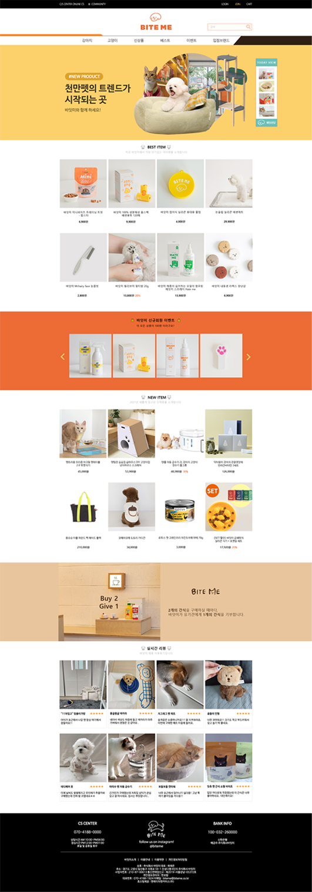
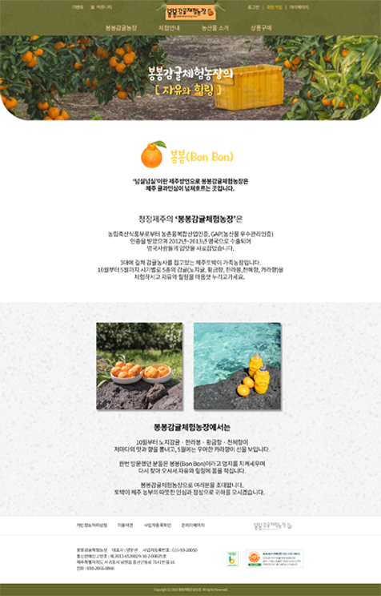

스크롤을 내려주세요


-
바잇미
- 기존의 바잇미 로고를 강조하며 이와 잘 어울리는
쨍한 색감을 사용하였고, 현재 홈페이지는 모바일
앱의 구성으로 되어있어서 사용자들에게 보편화 된
PC 화면의 구성으로 홈페이지를 리뉴얼 하였습니다. - PS, HTML, CSS, JS 사용
-
- 

-
봉봉감귤체험농장
- 더욱 제주다움을 표현하기 위해
헤더, 바디, 푸터 등 전반적으로 감귤과
어울리는 색상으로 홈페이지를 리뉴얼 하였습니다. - PS, HTML, CSS 사용
-
- 
-
용인세브란스병원(반응형)
- 따뜻한 병원 병원 따뜻한 병원 병원
따뜻한 병원 병원 따뜻한 병원 병원 따뜻한 병원 - PS, HTML, CSS, JS 사용
-
-
삼익악기(반응형)
- 삼익 피아노 피아노가 삼익 피아노 피아노가
삼익 피아노 삼익 피아노 피아노 피아노 피아노
그렇게 홈페이지를 리뉴얼 하였습니다. - PS, HTML, CSS, JS 사용
-
-